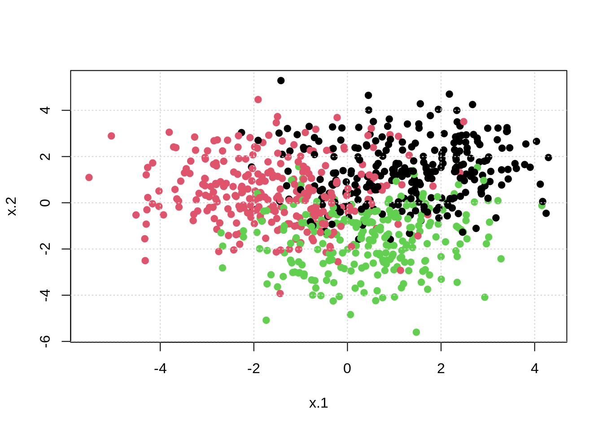
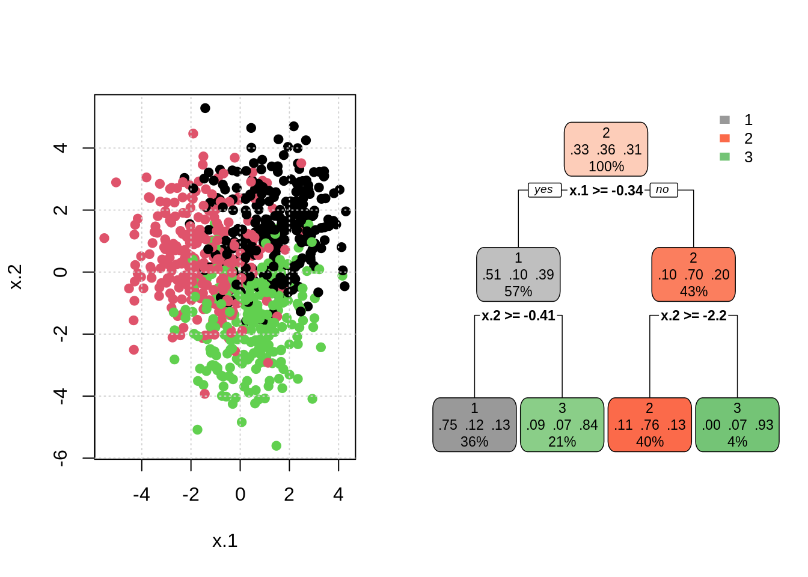
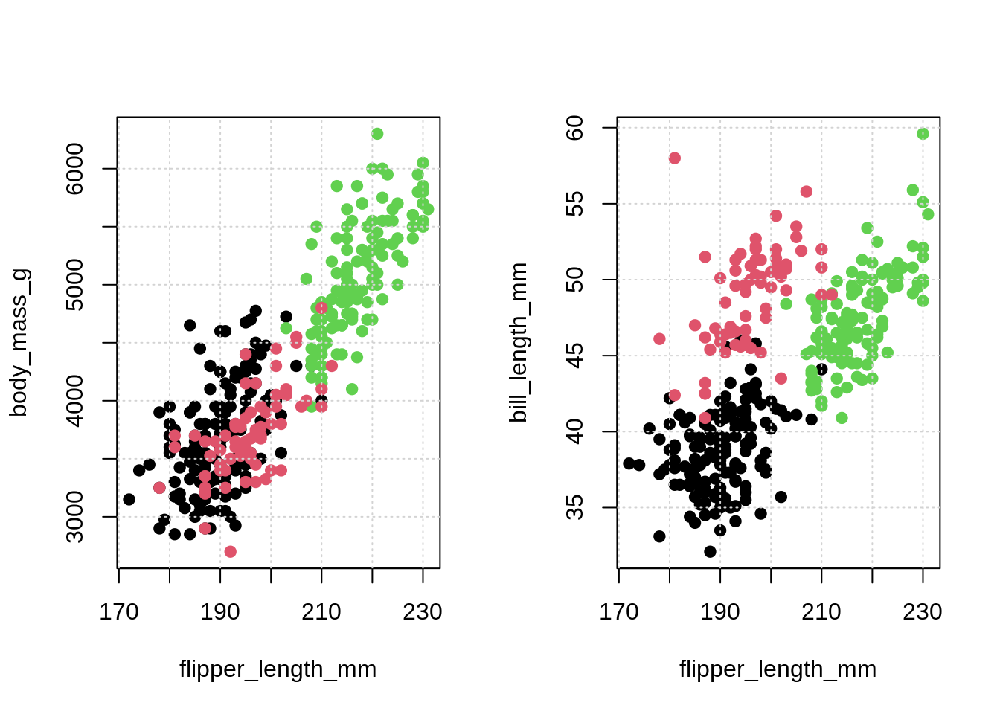

Chapter 7 Nonparametric Classification
Full book chapter still delayed! Keeping up with writing every week is getting tough. Below are the notes and code from the video.
## Loading required package: lattice# set seed
set.seed(42)
# generate data
sim_data = as_tibble(mlbench.2dnormals(n = 1000, cl = 3, sd = 1.3))
# tst-trn split data
trn_idx = sample(nrow(sim_data), size = 0.8 * nrow(sim_data))
trn = sim_data[trn_idx, ]
tst = sim_data[-trn_idx, ]
# est-val split data
est_idx = sample(nrow(trn), size = 0.8 * nrow(trn))
est = trn[est_idx, ]
val = trn[-est_idx, ]
# check data
trn## # A tibble: 800 x 3
## x.1 x.2 classes
## <dbl> <dbl> <fct>
## 1 -0.929 2.32 1
## 2 -3.25 2.27 2
## 3 -0.767 1.06 2
## 4 3.42 3.10 1
## 5 2.37 0.786 3
## 6 3.90 1.54 1
## 7 -0.373 -1.89 2
## 8 -1.10 -1.58 2
## 9 0.609 1.29 1
## 10 2.31 1.49 1
## # … with 790 more rows# visualize data
p1 = ggplot(data = trn, aes(x = x.1)) +
geom_density(aes(fill = classes), alpha = 0.5) +
scale_fill_manual(values=c("grey", 2, 3))
p2 = ggplot(data = trn, aes(x = x.2)) +
geom_density(aes(fill = classes), alpha = 0.5) +
scale_fill_manual(values=c("grey", 2, 3))
p3 = ggplot(data = trn, aes(x = x.1)) +
geom_histogram(aes(fill = classes), alpha = 0.7, position = "identity") +
scale_fill_manual(values=c("grey", 2, 3))
p4 = ggplot(data = trn, aes(x = x.2)) +
geom_histogram(aes(fill = classes), alpha = 0.7, position = "identity") +
scale_fill_manual(values=c("grey", 2, 3))
gridExtra::grid.arrange(p1, p2, p3, p4)## `stat_bin()` using `bins = 30`. Pick better value with `binwidth`.
## `stat_bin()` using `bins = 30`. Pick better value with `binwidth`.

# fit knn model
mod_knn = knn3(classes ~ ., data = trn, k = 10)
# make "predictions" with knn model
new_obs = data.frame(x.1 = 2, x.2 = -2)
predict(mod_knn, new_obs, type = "prob")## 1 2 3
## [1,] 0 0 1## [1] 3
## Levels: 1 2 3# fit tree model
mod_tree = rpart(classes ~ ., data = trn, minsplit = 5)
# make "predictions" with knn model
new_obs = data.frame(x.1 = 3, x.2 = 3)
predict(mod_tree, new_obs, type = "prob")## 1 2 3
## 1 0.7508772 0.122807 0.1263158## 1
## 1
## Levels: 1 2 3# visualize tree results
par(mfrow = c(1, 2))
plot(x.2 ~ x.1, data = trn, col = classes, pch = 20, cex = 1.5)
grid()
rpart.plot(mod_tree, type = 2, box.palette = list("Grays", "Reds", "Greens"))
# helper function to calculate misclassification
calc_misclass = function(actual, predicted) {
mean(actual != predicted)
}
# calculate test metric
mod_knn = knn3(classes ~ ., data = trn, k = 10)
calc_misclass(
actual = tst$classes,
predicted = predict(mod_knn, tst, type = "class")
)## [1] 0.215## [1] 0.2257.1 Example: KNN on Simulated Data
# tune knn model ###############################################################
# set seed
set.seed(42)
# k values to consider
k_val = seq(1, 101, by = 2)
# function to fit knn to est for various k
fit_knn_to_est = function(k) {
knn3(classes ~ ., data = est, k = k)
}
# fit models
knn_mods = lapply(k_val, fit_knn_to_est)
# make predictions
knn_preds = lapply(knn_mods, predict, val, type = "class")
# calculate validation misclass
knn_misclass = sapply(knn_preds, calc_misclass, actual = val$classes)
# plot results
plot(k_val, knn_misclass, pch = 20, type = "b")
grid()
## [1] 55- TODO: add training misclass
- TODO: expand possible k value
- TODO: re-fit to training data, report test misclass
7.2 Example: Decision Tree on Penguin Data
## # A tibble: 344 x 8
## species island bill_length_mm bill_depth_mm flipper_length_mm body_mass_g
## <fct> <fct> <dbl> <dbl> <int> <int>
## 1 Adelie Torgersen 39.1 18.7 181 3750
## 2 Adelie Torgersen 39.5 17.4 186 3800
## 3 Adelie Torgersen 40.3 18 195 3250
## 4 Adelie Torgersen NA NA NA NA
## 5 Adelie Torgersen 36.7 19.3 193 3450
## 6 Adelie Torgersen 39.3 20.6 190 3650
## 7 Adelie Torgersen 38.9 17.8 181 3625
## 8 Adelie Torgersen 39.2 19.6 195 4675
## 9 Adelie Torgersen 34.1 18.1 193 3475
## 10 Adelie Torgersen 42 20.2 190 4250
## # … with 334 more rows, and 2 more variables: sex <fct>, year <int># visualize data
par(mfrow = c(1, 2))
plot(body_mass_g ~ flipper_length_mm, data = penguins,
col = species, pch = 20, cex = 1.5)
grid()
plot(bill_length_mm ~ flipper_length_mm, data = penguins,
col = species, pch = 20, cex = 1.5)
grid()
# fit tree and visualize
peng_mod = rpart(species ~ . - year, data = penguins)
rpart.plot(peng_mod, type = 2, box.palette = list("Grays", "Reds", "Greens"))
# fit bigger tree and visualize
peng_mod_big = rpart(species ~ . - year, data = penguins, minsplit = 2, cp = 0)
rpart.plot(peng_mod_big, type = 2, box.palette = list("Grays", "Reds", "Greens"))
- TODO: tune